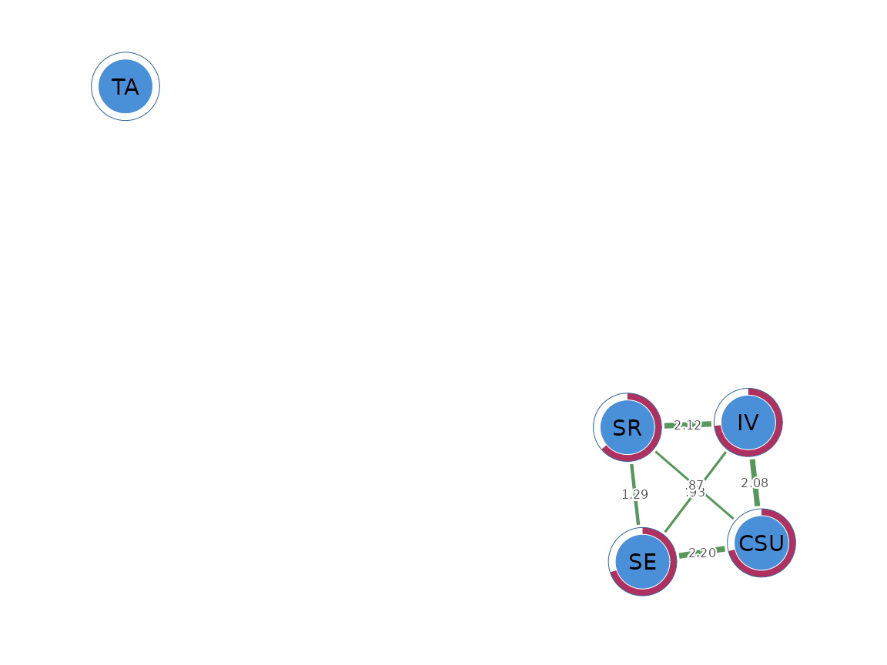

Ising networks for binary data
Mohammed Saqr
University of Eastern FinlandSonsoles López-Pernas
University of Eastern FinlandSource:
vignettes/ising-networks.Rmd
ising-networks.RmdMany psychological and educational variables are binary. A symptom may be present or absent, a diagnostic criterion may be met or not met, an assessment item may be passed or failed, and a behaviour may be reported or not reported. These variables represent distinct states rather than measurements along a continuous scale. Methods based on correlations and partial correlations among continuous variables are therefore not always appropriate. The Ising model provides a framework for estimating networks of binary variables (van Borkulo et al., 2014), and it is closely related to item response theory models, a link that connects the network and latent-variable views of the same data (Marsman et al., 2018). In an Ising network, each edge represents a conditional association on the log-odds scale. A positive edge indicates that, when one variable is present, the odds of another variable being present are higher, conditional on the remaining variables. A negative edge indicates lower conditional odds. An absent edge indicates that the association between two variables is not estimated as a direct association after accounting for the other variables in the network.
Psychological networks describe the conditional associations among variables within a psychological system. They are now a standard method in psychological science, with established procedures for estimation, accuracy assessment and reporting (Borsboom et al., 2021; Epskamp et al., 2018), and recent work has extended Ising estimation to Bayesian structure selection (Marsman et al., 2022). In education, psychological networks show how the components of learning and regulation relate to one another, rather than treating each component as a separate outcome (Saqr et al., 2024). Applications include self-regulation in academic writing (Saqr et al., 2021) and the relation between students’ monitoring events and the phases of regulation (Malmberg et al., 2022). Networks can also be estimated for a single learner, which shows how a process is organised within that person rather than assuming that the group-level network describes every student (Saqr & López-Pernas, 2024).
This article demonstrates how to estimate and interpret an Ising
network using psychnets. The example uses five binary
indicators of self-regulated learning. It explains how the estimated
interactions can be interpreted, how node centrality and predictability
can be examined, and how the regularized network can be compared with an
unregularized estimator. The data are generated by a large language
model and are used to illustrate the analysis rather than to draw
conclusions about students.
The model
For a binary vector , the Ising model gives
where is the threshold of node (its tendency to be 1 when all other nodes are 0), the interaction between nodes and , and the normalizing constant. The conditional distribution of one node is a logistic regression on the others,
so is the conditional odds ratio of when changes from 0 to 1.
The network is estimated by fitting a separate logistic regression for each node, using all remaining nodes as predictors. Each regression uses an penalty, which shrinks coefficients and can set some of them to zero. The penalty is selected using the extended BIC with . Because each pair of nodes appears in two regressions, the procedure produces two estimates for each possible interaction. The AND rule retains an edge only when both regressions select it, whereas the OR rule retains an edge when either regression selects it. For a retained edge, the two estimates are averaged to obtain its weight.
Data
SRL_GPT contains 300 sets of responses to the Motivated
Strategies for Learning Questionnaire. The responses were generated by a
large language model (GPT) in a study examining how such models answer
psychological surveys (Vogelsmeier et al., 2025). They provide a
structured example for demonstrating the analysis, but they do not
represent observations from students. The construct scores are
continuous. In this example, dichotomize() with
method = "rank" converts each score into a binary
indicator, coding a score as 1 when it falls in the upper half of its
distribution and as 0 otherwise.
-
Nodes: five binary indicators, 1 for the upper half
of
CSU(cognitive strategy use),IV(intrinsic value),SE(self-efficacy),SR(self-regulation) andTA(test anxiety). - Observations: one row per respondent; the data are complete.
binary_data <- dichotomize(data = SRL_GPT, method = "rank")
head(binary_data)
#> CSU IV SE SR TA
#> [1,] 0 0 0 0 1
#> [2,] 1 1 1 1 1
#> [3,] 1 1 1 1 0
#> [4,] 0 1 1 0 1
#> [5,] 0 0 0 0 1
#> [6,] 0 0 0 0 0
colMeans(binary_data)
#> CSU IV SE SR TA
#> 0.4966667 0.5366667 0.4766667 0.4600000 0.5000000The proportion coded as 1 ranges from 46% to 54% across the five indicators. The proportions do not equal exactly 50% because tied scores remain on the same side of the split. Dichotomization reduces the information available in the original scores and should therefore be used only when the research question concerns the distinction between the two states. Variables that are naturally binary can be analysed without this additional step.
Which indicators are directly associated?
The function psychnet() estimates the network when
method = "ising" is specified. The AND rule
(rule = "AND") is the default and is stated explicitly here
to make the estimation procedure clear.
ising_net <- psychnet(data = binary_data, method = "ising", rule = "AND")
summary(ising_net)
#> <psychnet> ising network
#> nodes: 5 edges: 6 (undirected)
#> optimality (KKT residual): 2.53e-09
#> edge weight: range [0.868, 2.201], mean 1.582
as.data.frame(ising_net)
#> from to weight
#> 1 CSU IV 2.0823827
#> 2 CSU SE 2.2005411
#> 3 IV SE 0.9297109
#> 4 CSU SR 0.8683591
#> 5 IV SR 2.1232839
#> 6 SE SR 1.2884921The estimated network contains 6 edges, all positive and connecting
the four learning constructs. Their weights range from 0.868 to 2.201.
The strongest interaction is between CSU and
SE (2.201). Conditional on the other indicators, being in
the upper half of cognitive strategy use is associated with
approximately nine times the odds of being in the upper half of
self-efficacy
().
The weakest interaction is between CSU and SR
(0.868), corresponding to an odds ratio of approximately 2.4.
Test anxiety has no estimated edge in this network. After accounting for the learning constructs, the model does not estimate a direct association between test anxiety and any of them. The Gaussian network estimated from the continuous scores contains a negative edge between self-regulation and test anxiety (-0.350; see the Gaussian graphical models article). The absence of this edge in the binary network illustrates how dichotomization can change the associations represented in a network by discarding information from the original scores.
Is the fitted network the optimum of its objective?
The penalized logistic regressions are solved iteratively. A solution to each regression must satisfy the Karush–Kuhn–Tucker (KKT) optimality conditions. The certificate returned for the network is the largest violation of these conditions across the five regressions. A value close to zero indicates that the fitted solution satisfies the numerical optimality conditions of the objective.
certificate(ising_net)
#> method certificate kind certified
#> 1 ising 2.531323e-09 kkt TRUEThe largest violation is , indicating that the fitted interactions satisfy the optimality conditions of the penalized regressions. This certificate assesses the numerical solution of the estimation procedure. It does not establish the sampling stability of the edges or the validity of the binary coding.
Which indicators are most connected?
The function net_centralities() returns two measures of
node connectedness. Strength is the sum of the absolute interaction
weights connected to a node, whereas expected influence is the sum of
its signed interaction weights.
net_centralities(ising_net)
#> node strength expected_influence
#> 1 CSU 5.151283 5.151283
#> 2 IV 5.135377 5.135377
#> 3 SE 4.418744 4.418744
#> 4 SR 4.280135 4.280135
#> 5 TA 0.000000 0.000000Cognitive strategy use (5.151) and intrinsic value (5.135) have the highest strength, followed by self-efficacy (4.419) and self-regulation (4.280). Because all estimated edges are positive, expected influence has the same values as strength. Test anxiety has no edges and therefore has a value of 0 for both measures. The four learning indicators have similar levels of connectedness, while test anxiety is separated from them in the estimated network.
How well is each indicator classified from the others?
For a binary node, predictability describes how accurately its value can be classified using the other nodes in the network. The normalized classification coefficient (nCC) expresses this accuracy relative to the accuracy obtained by always predicting the more frequent category (Haslbeck & Waldorp, 2018):
where
is the proportion of correctly classified observations and
is the proportion belonging to the more frequent category. An nCC of 0
indicates no improvement over this base-rate prediction, while an nCC of
1 indicates perfect classification. net_predict() requires
the original data to calculate predictability.
net_predict(ising_net, data = binary_data)
#> node type metric predictability accuracy
#> 1 CSU binary nCC 0.7114094 0.8566667
#> 2 IV binary nCC 0.7338129 0.8766667
#> 3 SE binary nCC 0.6993007 0.8566667
#> 4 SR binary nCC 0.6376812 0.8333333
#> 5 TA binary nCC 0.0000000 0.5000000Intrinsic value has the highest predictability, with 87.7% of observations classified correctly and nCC = 0.734. Cognitive strategy use (nCC = 0.711) and self-efficacy (nCC = 0.699) follow, with 85.7% correct classification for each. Self-regulation has nCC = 0.638 and 83.3% correct classification. Test anxiety has nCC = 0 and 50% correct classification. Because it has no neighbours in the network, its classification is no better than the base-rate prediction. These values are calculated from the same data used to estimate the network and should be interpreted as in-sample results.
Does an unregularized estimator find the same network?
The estimator specified by method = "ising_sampler" fits
the nodewise logistic regressions without a penalty. It then removes
interactions whose Wald tests are not significant at the specified
alpha level. Comparing this network with the regularized
estimate allows us to examine whether the selected edge structure
differs between the two estimation approaches.
unregularized_net <- psychnet(data = binary_data, method = "ising_sampler",
alpha = 0.05)
unregularized_net
#> <psychnet> ising_sampler network
#> nodes: 5 edges: 6 (undirected)
#> optimality: unavailable
as.data.frame(unregularized_net)
#> from to weight
#> 1 CSU IV 2.2425237
#> 2 CSU SE 2.3454742
#> 3 IV SE 1.1870117
#> 4 CSU SR 0.8818853
#> 5 IV SR 2.2882117
#> 6 SE SR 1.4609560The unregularized network contains the same 6 edges, and test anxiety
remains isolated. The estimated interactions are larger than those in
the regularized network. For example, the
CSU–SE interaction is 2.345 rather than 2.201,
and the IV–SR interaction is 2.288 rather than
2.123. This difference is consistent with the regularization procedure
shrinking the estimated interactions. In this example, both estimators
identify the same edge structure.
certificate(unregularized_net)
#> method certificate kind certified
#> 1 ising_sampler NA kkt NAThe certificate for the unregularized network is NA. The
Wald pruning procedure sets non-significant interactions to zero, so the
resulting network is no longer the maximum-likelihood solution for which
the certificate evaluates the optimality conditions. The regularized
network, in contrast, has a certified optimum.
What does the network look like?
The function cograph::splot() visualizes the network.
Positive edges are shown in green and negative edges in red, while the
ring around each node represents its predictability.
cograph::splot(ising_net, psych_styling = TRUE, predictability = TRUE)
The figure displays four learning indicators connected to one another and an isolated test anxiety node. The predictability ring for test anxiety is empty, reflecting its nCC of 0. Node positions are determined by the layout algorithm and do not have a statistical interpretation.
Reporting the analysis
A report of an Ising network should define what 1 and 0 represent for each node and explain how any dichotomization was performed. It should also state the sample size, estimator, value of , selection rule (AND or OR), and treatment of missing data. Interaction weights should be reported on the log-odds scale. Predictability should be reported using nCC alongside raw classification accuracy.
In this example, a regularized Ising network
(,
AND rule) was estimated from rank-dichotomized scores for 300 complete
responses. The network retained 6 positive edges among the learning
constructs, with the largest interaction between CSU and
SE (2.201), and test anxiety was isolated. An unregularized
estimator with Wald pruning at 0.05 retained the same edges.
Assumptions and when to use the Ising model
- The variables are binary. Ordinal or continuous variables should not be dichotomized only to fit the model, since the example shows that a median split can remove a substantive edge.
- Observations are independent of one another.
- The nodewise regressions of a pair can disagree. The AND rule gives a sparser and more conservative network, the OR rule a denser one; edges that appear only under OR should be reported as rule-dependent.
- For networks that combine binary and continuous variables, use a mixed graphical model.
- Edges are conditional associations, not causal effects.
How to cite this article
Saqr, M., & López-Pernas, S. (2026). Ising networks for binary data. psychnets. https://doi.org/10.5281/zenodo.24567516 · HTML · PDF
References
Borsboom, D., Deserno, M. K., Rhemtulla, M., Epskamp, S., Fried, E. I., McNally, R. J., Robinaugh, D. J., Perugini, M., Dalege, J., Costantini, G., Isvoranu, A.-M., Wysocki, A. C., van Borkulo, C. D., van Bork, R., & Waldorp, L. J. (2021). Network analysis of multivariate data in psychological science. Nature Reviews Methods Primers, 1, 58. doi:10.1038/s43586-021-00055-w
Epskamp, S., Borsboom, D., & Fried, E. I. (2018). Estimating psychological networks and their accuracy: A tutorial paper. Behavior Research Methods, 50(1), 195-212. doi:10.3758/s13428-017-0862-1
Haslbeck, J. M. B., & Waldorp, L. J. (2018). How well do network models predict observations? On the importance of predictability in network models. Behavior Research Methods, 50(2), 853-861. doi:10.3758/s13428-017-0910-x
Malmberg, J., Saqr, M., Järvenoja, H., & Järvelä, S. (2022). How the monitoring events of individual students are associated with phases of regulation: A network analysis approach. Journal of Learning Analytics, 9(1), 77-92. doi:10.18608/jla.2022.7429
Marsman, M., Borsboom, D., Kruis, J., Epskamp, S., van Bork, R., Waldorp, L. J., van der Maas, H. L. J., & Maris, G. (2018). An introduction to network psychometrics: Relating Ising network models to item response theory models. Multivariate Behavioral Research, 53(1), 15-35. doi:10.1080/00273171.2017.1379379
Marsman, M., Huth, K., Waldorp, L. J., & Ntzoufras, I. (2022). Objective Bayesian edge screening and structure selection for Ising networks. Psychometrika, 87(1), 47-82. doi:10.1007/s11336-022-09848-8
Saqr, M., Beck, E., & López-Pernas, S. (2024). Psychological networks: A modern approach to analysis of learning and complex learning processes. In M. Saqr & S. López-Pernas (Eds.), Learning analytics methods and tutorials: A practical guide using R (pp. 639-671). Springer. doi:10.1007/978-3-031-54464-4_19
Saqr, M., & López-Pernas, S. (2024). Mapping the self in self-regulation using complex dynamic systems approach. British Journal of Educational Technology, 55(4), 1376-1397. doi:10.1111/bjet.13452
Saqr, M., Peeters, W., & Viberg, O. (2021). The relational, co-temporal, contemporaneous, and longitudinal dynamics of self-regulation for academic writing. Research and Practice in Technology Enhanced Learning, 16, 29. doi:10.1186/s41039-021-00175-7
van Borkulo, C. D., Borsboom, D., Epskamp, S., Blanken, T. F., Boschloo, L., Schoevers, R. A., & Waldorp, L. J. (2014). A new method for constructing networks from binary data. Scientific Reports, 4, 5918. doi:10.1038/srep05918
Vogelsmeier, L. V. D. E., Oliveira, E., Misiejuk, K., López-Pernas, S., & Saqr, M. (2025). Delving into the psychology of machines: Exploring the structure of self-regulated learning via LLM-generated survey responses. Computers in Human Behavior, 173, 108769. doi:10.1016/j.chb.2025.108769